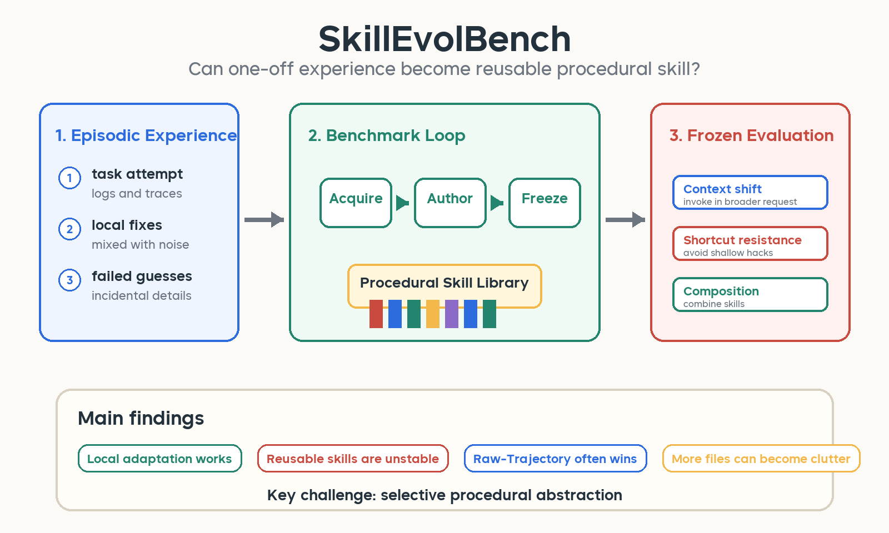

第一の貢献は、skill use と skill formation を分けて評価する設計です。学習時にはスキルを更新できますが、評価時にはライブラリを凍結するため、後半の成功は事前に形成されたスキルの効果として見やすくなります。

どんな論文か
SkillEvolBench の中心問いは、LLM エージェントが残す一回ごとの作業経験を、後続タスクで使える手続き的スキルへ変換できるのか、というものです。過去ログを保存して再利用できることと、そこから一般化された手順を抽出できることは別問題だ、という切り分けが出発点です。
ベンチマークは 6 つの現実的なエージェント環境、各環境 5 つの手続きファミリ、各ファミリ 6 つのロールで構成されます。前半の canonical、enriched、variant タスクで経験を集め、検証フィードバックを使ってスキルライブラリを更新します。その後、ライブラリを凍結して context shift、adversarial、composition タスクで評価します。
実験結果はかなり慎重なものです。スキルベース条件は学習タスクや replay では改善することがある一方、凍結デプロイで安定して強いわけではありません。むしろ Raw-Trajectory、つまり過去軌跡を直接再利用する条件が、蒸留されたスキルをしばしば上回ります。
この結果は、スキル運用で本当に難しいのは保存容量でも更新頻度でもなく、何を残し何を捨てるかという選択的な手続き抽象化だと示しています。スキルを増やすだけでは、エピソード固有のノイズや古い前提も一緒に残ってしまいます。
この論文は、Agent Skills のような外部スキル成果物が、実際にエージェントの経験から育つのかを測るベンチマークを提案しています。既存研究がよく扱う「スキルがあると性能が上がるか」ではなく、「経験からスキルを形成できるか」に焦点を置いています。
各タスクファミリは、同じ潜在手続きを共有しつつ、表面形や失敗モードが変わるように設計されています。これにより、単なるタスク局所の修正ではなく、関連タスクへ持ち越せる手続きが形成されたかを見ます。
課題と貢献
これにより、スキルが有効に見える場合でも、本当に手続き抽象化が効いているのか、それとも過去軌跡を直接見たほうがよいだけなのかを比較できます。
第三の貢献は、凍結デプロイの失敗を文脈シフト、近道への耐性、複数スキルの組み合わせに分けて測る点です。単一の成功率では、どの能力が壊れているかが見えません。
手法のしくみ
1
学習フェーズでは、canonical、enriched、variant のタスクから軌跡と検証フィードバックを得ます。ホスト側の Skill Author がそれを読み、新しいスキルを書く、既存スキルを修正する、何もしない、のいずれかを選びます。
2
評価フェーズでは、スキルライブラリを凍結します。context-shift タスクは、より広い依頼文の中で必要なスキルを呼び出せるかを見ます。adversarial タスクは、浅いチェックだけを通る近道を避けられるかを見ます。composition タスクは、対象スキルを他のスキルと組み合わせられるかを見ます。
3
条件は No-Skill、Raw-Trajectory、Curated-Static、Curated-Revision、SelfGen-Zero-Shot、SelfGen-Revision、SelfGen-Always などに分かれます。さらに Tier-3 ablation では、scripts、references、assets のような追加リソースを強制して、容量を増やすだけで改善するかを調べます。
検証結果
主結果は、現在のエージェントは局所的には適応できるが、再利用可能な手続き的スキルの形成はまだ不安定、というものです。学習成功率や replay 成功率が伸びても、凍結デプロイの ESR、CSSR、ARSR、CompSR に一貫して転移するとは限りません。
Raw-Trajectory との比較では、多くのモデルと条件で、蒸留されたスキルよりも過去軌跡の直接再利用が強く出ています。これは、抽象化の過程で、将来タスクにも効く文脈的・手続き的な手がかりが落ちている可能性を示します。
Tier-3 リソースを増やすとライブラリのファイル数は増えますが、凍結評価は安定して改善しません。増えたリソースが、安定した手続きではなく、エピソード固有の仮定や古い文脈を保存してしまう場合があるからです。
限界と読みどころ
この論文の結果は、評価したモデル、ハーネス、タスク構成に依存します。新しいモデルでは傾向が変わる可能性があります。
ただし、凍結評価、Raw-Trajectory 対照、文脈シフト・近道・合成の分解という評価設計は、個人の agent skill 運用にもそのまま使える示唆があります。
実務上は、ログから学びを残すときに、具体エピソードをそのまま圧縮してスキル化するだけでは足りません。再利用条件、検証方法、捨てるべき局所情報を明示する必要があります。
読みながら見る図表や節
- Figure 1 は、タスク軌跡、検証フィードバック、Skill Author、スキルライブラリという抽象化の流れを示します。
- Figure 2 は、6環境と各環境の手続きファミリを示します。コード修正、API連携、データ処理、文書変換、調査統合、コミュニケーション運用まで幅広いです。
- Figure 3 は、学習、凍結評価、replay、環境リセットのプロトコルを示します。評価時に更新できないことが、このベンチマークの肝です。
- Figure 4 は、スキル条件が Raw-Trajectory と比べてどれだけ勝つか負けるかを示します。多くのセルが Raw-Trajectory 優位で、抽象化ボトルネックを示す重要な図です。
次に読むなら
- 次に読むなら、SkillsBench で curated skills がどの程度効くかを見たうえで、SkillOpt や SkillPyramid のような skill 更新・統合手法を読むとつながりがよいです。
- 実装運用の観点では、learn-from-logs や SKILL.md 更新の戻りテストを、元タスク再実行だけでなく、文脈シフト、近道、合成タスクにも広げるのがよさそうです。
読後Q&A
この論文は何を測っているの？
一回ごとのタスク経験が、未来のタスクで使える手続き的スキルに変換されるかを測っています。過去ログの保存や再利用ではなく、経験から一般化された手順を作れるかが焦点です。
なぜ Raw-Trajectory が重要なの？
過去軌跡を直接再利用する条件と比べることで、スキルへの抽象化が本当に価値を出しているかを見られるからです。論文では、Raw-Trajectory が蒸留スキルをしばしば上回り、抽象化で有用な手がかりが落ちている可能性を示しています。
スキルをたくさん追加すればよくなる？
必ずしもよくなりません。Tier-3 リソースを増やしても、凍結評価は安定して改善しませんでした。エピソード固有のノイズや古い仮定も一緒に残ると、むしろ邪魔になります。
一番参考になる評価設計は？
学習後にライブラリを凍結し、後続タスクで文脈シフト、近道への耐性、複数スキルの組み合わせを別々に測る設計です。元タスクでよくなっただけでは、再利用可能なスキルができたとは言えません。
自分のエージェント運用にはどう使える？
ログから skill や memory を更新するとき、具体例を詰め込むだけで終わらせないことです。いつ使うか、何を検証するか、どの情報は局所的なので捨てるかを残すほうが、後続タスクで壊れにくくなります。
この論文の結論は楽観的？
かなり慎重です。現在のエージェントは局所適応はできますが、堅牢で再利用可能なスキル形成はまだ安定していません。だからこそ、SkillEvolBench は進歩を測る診断ベンチマークとして提案されています。
Curated skills は効かないの？
効く場合はありますが、固定された curated skill が常に強いわけではありません。更新できる条件のほうが改善する場合もありますが、それでもモデルやタスクによって結果はかなり揺れます。
この論文のキーワードを一つにまとめるなら？
選択的な手続き抽象化です。経験の中から、将来にも使える確認手順や判断基準を残し、エピソード固有のノイズを捨てることが難しい、という問題を扱っています。